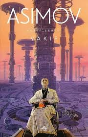

|


|
 kategoriler
kategoriler
 Yazarlar
Yazarlar
En Çok Okunan Bilim Kurgu Kitapları
|
 vakif (foundation)Vakıf, bilim kurgu tarihinin en önemli yapıtlarından biridir. Asimov bu eserde, bilim, siyaset, insan doğası ve uygarlığın çöküşü üzerine kurgulanmış devasa bir galaksi hikâyesi anlatır. Uzak bir gelecekte, Galaktik İmparatorluk binlerce yıldır evrene hükmetmektedir. Ancak artık çöküş sürecine girmiştir — tıpkı geçmişteki büyük imparatorluklar gibi. Bu sırada “psikotarih” adlı bir bilim dalı geliştirilmiştir. Bu bilim, insan davranışlarını istatistiksel olarak analiz ederek geleceğin büyük ölçekte tahmin edilmesini sağlar. Romanın merkezinde, bu bilimi kullanan bir bilim insanının (ve etrafındaki grubun), insanlığın karanlık çağa sürüklenmesini engellemek için başlattığı uzun vadeli bir plan vardır. Bu planın adı: Vakıf (Foundation). Vakıf, görünürde bilimsel bir ansiklopedi projesidir; ama aslında çok daha derin bir amaca hizmet eder. Kitap boyunca Asimov, bilginin, inancın ve gücün toplumları nasıl şekillendirdiğini büyük bir ustalıkla işler. |
İletişim:
 ramazan0058.rc@gmail.com
ramazan0058.rc@gmail.com